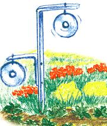

My husband's chickens and guinea hens just wouldn't stay out of my garden and flower beds. I found a way to keep them out, as well as the birds that wouldn't stay out of my fruit trees. At least once a week we receive a CD with some Internet offer. We used to just throw them out, but I found that the bright and shiny side reflects light and produces a prism of colors as they wave in the wind. These fluttering distractions keep the birds away, both domestic and wild. I used fence stretch bars to hang them on. The material CDs are made from is pliable and can be bent and drilled without trouble. It's not only galvanized (thus rust-resistant), but it's also free.
Phyllis Mattena
Pine Canyon, UT
|
 |
|
|